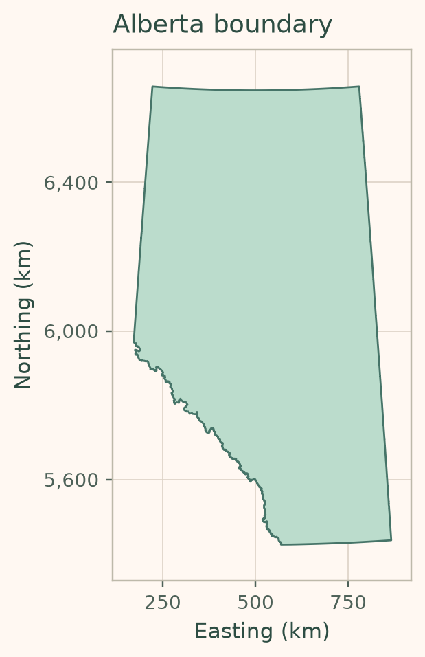
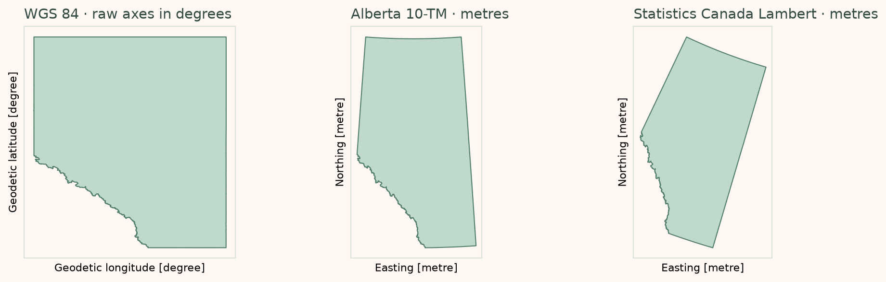
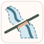

From geography to evidence
Select a stage to see how geographic observations become evidence, or combine layers in the Alberta map.
Start with Alberta’s outline and its census divisions.
1. Introduction to GeoPandas
GeoPandas extends pandas with a geometry column, coordinate reference systems and vector spatial operations. An attribute table can tell you how many people live in a census area. Its geometry lets you ask where those people live relative to a hospital, river or wildfire footprint.
A GeoSeries stores geometries with a shared CRS. A GeoDataFrame is a pandas table with an active GeoSeries. Shapely implements geometry operations through GEOS, pyproj transforms coordinates through PROJ, and pyogrio uses GDAL to read and write GeoPackage, shapefile and GeoJSON. NumPy and SciPy support numerical work, libpysal builds neighbourhoods, NetworkX models graphs, and Matplotlib and Leaflet present results. GeoPandas documentation.
Applications span public health, municipal planning, forestry, government operations and business location analysis. QGIS and ArcGIS support interactive GIS authoring and editing. PostGIS manages indexed spatial tables in a relational database. GeoPandas supports scripted, reproducible vector workflows.
Installation command
python -m pip install geopandaspandas DataFrame
name
AlbertaTabular attributes with column types.
GeoPandas GeoDataFrame
name geometry
Alberta POLYGONActive geometry plus its coordinate system.
Import GeoPandas, read the project’s GeoPackage, inspect its row and its coordinate system, then plot the active geometry. Run this example from the asset directory.
Python Script — Read and plot Alberta
import geopandas as gpd
alberta = gpd.read_file("data/shared/processed/alberta_boundary.gpkg")
print(alberta.head())
print(alberta.crs)
alberta.plot()
Python Output
Actual output loads from the executed build.GeoDataFrame Preview
- Records
- 1
- Geometry type
- Polygon
- Active geometry
- geometry
- Coordinate reference system
- EPSG:3400
- Coordinate units
- metres
GeoPandas associates the active geometry column with Alberta’s projected coordinate system. The plot displays the projected easting and northing axes in kilometres.
2. Understanding geographic data
A point p = (x, y) locates a hospital. A LineString L = (p₁, …, pₙ) links vertices in order, as in a road centreline. A polygon consists of a closed exterior ring and optional interior rings. Its boundary separates its interior from the exterior, and the interior rings can represent holes inside a wildfire footprint.
| Geometry | Structure | Alberta example |
|---|---|---|
| Point / MultiPoint | One coordinate / several points | Hospital / hypothetical candidate sites |
| LineString / MultiLineString | One path / several paths | Road centreline / road pieces after clipping |
| Polygon / MultiPolygon | One surface / several surfaces | Dissemination area / separated fire patches |
| GeometryCollection | Mixed geometries | Polygon overlay or repair that returns several geometry types |
Choose the geometry that matches the measurement. Hospital points support distance comparisons, road lines carry lengths, and polygons let you measure the area inside a boundary or shared by two features.
A province sets the reporting extent. Census divisions organize larger regions, census subdivisions approximate municipalities or equivalents, and dissemination areas (DAs) group adjacent dissemination blocks. Population centres describe contiguous population concentrations. An official representative point is a census locator. A centroid balances polygon area and can fall outside a concave area. An interior point guarantees containment for a valid polygon. Government of Alberta, Alberta Census Boundaries – Current · Statistics Canada, 2021 Geographic Attribute File.
3. Mathematical and computational foundations
3.1 Coordinate reference systems
WGS 84 (EPSG:4326) stores angular coordinates. GeoJSON lists longitude before latitude. EPSG:3857 supports familiar web maps, with scale distortion increasing away from the equator. Statistics Canada Lambert (EPSG:3347) is a conformal national projection. NAD83 / Alberta 10-TM (Forest), EPSG:3400, has metre axes and a provincial area of use, so it supports distance and road-length measurements. Area calculations use a NAD83 Albers equal-area conic with parallels at 49° and 60° and central meridian 115° W. EPSG registry, NAD83 / Alberta 10-TM (Forest).
set_crs assigns verified CRS metadata to existing coordinates. to_crs computes new coordinates for the same places. Divide metres by 1,000 for kilometres and square metres by 1,000,000 for square kilometres.
On a sphere of radius R the great-circle distance is R times the central angle. The haversine formula uses a = sin²(Δφ/2) + cos φ₁ cos φ₂ sin²(Δλ/2), with d = 2R asin(√a). Angles are in radians. The ellipsoidal comparison uses pyproj.Geod between fixed Calgary and Edmonton reference coordinates.

Python Script — read and validate the census boundariesCollapse Code
Open this panel to load the executed Python excerpt.3.2 Spatial predicates and geometric operations
intersects asks whether any point is shared. touches permits boundary contact with disjoint interiors. within and contains reverse the same test. overlaps requires same-dimensional partial sharing. crosses captures a lower-dimensional interior intersection for applicable type pairs. distance measures minimum separation.
Intersection retains shared geometry, union merges coverage, difference removes the shared geometry, and a buffer keeps all points within distance r. Spatial joins attach attributes using a predicate. Overlay creates new geometries and carries source attributes. Healthcare uses nearest and buffer, wildfire uses union, flood uses intersection, and spatial statistics use contiguity.
3.3 Spatial indexes and exact tests
Comparing all n × m pairs can require O(nm) tests. A packed STRtree indexes axis-aligned bounding boxes and identifies candidates for exact tests. An envelope can intersect a query even if the enclosed shape misses it. Elongated geometries, overlapping envelopes and broad queries reduce selectivity. GeoPandas exposes an index as gdf.sindex. Spatial joins, nearest joins, overlays and clips use indexed selection in their workflows. Shapely STRtree documentation · Guttman (1984), R-trees: A Dynamic Index Structure for Spatial Searching, ACM SIGMOD, 47–57.
4. Alberta as a geospatial analytical environment
The study uses a common 2021 Alberta census geography for province-wide analyses and zooms to central Calgary where published flood surfaces and roof data intersect.
The boundary and population tables join through Alberta’s eight-digit DA code after checking vintage and geography type in DGUID. The Geographic Attribute File supplies population-weighted DA reference coordinates. Population density uses the published census land-area field. Government of Alberta, Alberta Census Boundaries – Current · Statistics Canada, census counts, table 98-10-0015-01 · Statistics Canada, 2021 Geographic Attribute File.
| Product | Coverage | Role |
|---|---|---|
| 2021 boundaries and census | Alberta DAs and census divisions | Population denominators and area indicators |
| ODHF v2.0 | Alberta subset of the September 2026 release | Listed facility locations |
| Alberta wildfire records | 2006–2025 incidents and ten rolling perimeter years | Counts, footprints and proximity |
| FHIMP, 2021 RNF and Calgary roofs | Central Calgary rectangle and provincial hazard context | Road length and roof area exposure |
The pipeline caches and hashes source files. ArcGIS acquisition inspects layer schemas and checks returned IDs across pages. Source dates, geometry defects and unavailable observations are recorded in the validation report.
Python Script — validate and download public source filesCollapse Code
Open this panel to load the executed Python excerpt.Python Script — inspect ArcGIS schemas and verify query resultsCollapse Code
Open this panel to load the executed Python excerpt.5. Application I — Healthcare accessibility and optimal facility placement
Which communities are relatively distant from listed facilities, and which single hypothetical addition would reduce Alberta’s population-weighted distance most?
5.1 From facility points to weighted coverage
The study uses the ODHF’s hospital, clinic and ambulatory-care classes where represented, removes same-class co-located points and restricts service locations to Alberta. One published hospital polygon is represented by an interior point. The two inventory versions classify and compile facilities differently. The official 2020 hospital inventory provides a coverage sensitivity check. Statistics Canada, 2020 ODHF map distribution. Census population is assigned to the official DA locator. The comparison combines two vintages and measures straight-line proximity. Dataset coverage can dominate the estimate because province-wide publication does not guarantee a complete inventory of Alberta hospitals. Capacity, operating hours, eligibility, referrals and cross-border travel can alter practical access. Statistics Canada, Open Database of Healthcare Facilities v2.0 · Statistics Canada, 2021 Geographic Attribute File.
The indicator equals one when the representative point lies at or within the selected radius. The interactive scenarios retain extra distance precision at the cutoffs. A weighted median is the first distance at which cumulative population reaches half the total. Assigning all residents to one locator approximates the distribution of addresses within each DA.
Python Script — load, classify and clip official healthcare facilitiesCollapse Code
Open this panel to load the executed Python excerpt.Python Script — compute nearest distances, Voronoi catchments and buffersCollapse Code
Open this panel to load the executed Python excerpt.Using Alberta’s 2021 dissemination-area reference points and ODHF v2.0 hospitals, moving from a 10 km to a 25 km cutoff includes 424,961 additional residents. Coverage rises from 66.8% to 76.8% of the modelled population.
5.2 Service catchments and a candidate location
Voronoi cell Vⱼ contains locations at least as close to facility j as to any other. The clipped cells partition Alberta. Buffers answer who is within a fixed radius. A place can belong to a nearest cell while falling outside all buffers.
The search evaluates each candidate with all existing facilities kept open. The alternative maximum-coverage objective chooses the candidate with the largest number of 2021 residents within the selected threshold after the addition. Both objectives enumerate the same fixed set. Candidates come from population-centre interior points, with distinct mapped parts of the same centre offered as separate locations. The objective compares populated places and leaves land, clinical, financial and regulatory feasibility to a separate assessment.
A general p-median uses binary open decisions yⱼ and assignment decisions xᵢⱼ to minimize ΣᵢΣⱼPᵢdᵢⱼxᵢⱼ. Each demand point satisfies Σⱼxᵢⱼ = 1, assignments require xᵢⱼ ≤ yⱼ, and Σⱼyⱼ = p. For incremental additions, fix yⱼ = 1 at existing sites and constrain the number of new sites separately. Hakimi (1964), Optimum Locations of Switching Centers and the Absolute Centers and Medians of a Graph, Operations Research 12, 450–459.
Python Script — evaluate the single-addition location objectiveCollapse Code
Open this panel to load the executed Python excerpt.GeoPandas read or constructed points, transformed them to metres, clipped sites and computed a nearest join. NumPy and SciPy evaluated the site scenario and GeoPandas exported the resulting geometries.
6. Application II — Wildfire exposure and spatiotemporal analysis
Where have mapped wildfire footprints repeatedly occurred, and how does the answer change with the year, grid scale or threshold?
6.1 Annual union and recurrence
The incident CSV provides event records, including ignition coordinates and reported sizes where available. Perimeters delineate mapped footprints. Each rolling layer’s calendar year is verified using its feature year. Incident counts use the 2006–2025 CSV. The footprint analysis uses the verified perimeter series and excludes prescribed burn codes PB and PB_*. Government of Alberta, historical wildfire data and perimeters.
Union eliminates within-year overlap before measuring area. Across years, unique footprint measures the union of all annual footprints. Cumulative area adds each year’s area, retaining recurrence across years. Historical recurrence is the fraction of represented years exceeding a selected grid-cell threshold. Mapping coverage, climate and reporting practices can change through time.
Among the years with verified perimeter coverage (2016–2025), 2016 had the most incident records (1,376). In 2023, 1,132 records coincided with 34,281 km² of mapped footprint, about 7.5 times the 2016 area. Incident counts and unioned perimeter area measure different aspects of wildfire activity.
Hexagons share a common nominal scale. Clipping boundary cells changes their denominators and fragments below one square kilometre are dropped. Different cell sizes and thresholds change measured recurrence, an example of the modifiable areal unit problem. Openshaw (1984). Proximity uses population assigned to 2021 DAs. It describes distance to mapped footprints, while evacuation, smoke and damage require separate observations.
6.2 Spatial intensity and bandwidth
A Gaussian kernel spreads unit mass around each ignition location. The calculation bins events at 10 km and applies Gaussian smoothing with selectable bandwidths. Units are incidents per km² over the full observation period. Edge loss affects the smooth surface near boundaries. A wider bandwidth smooths more local variation. Diggle (1985).
Python Script — verify calendar years and union annual perimetersCollapse Code
Open this panel to load the executed Python excerpt.Python Script — construct hexagons and calculate burned fractionsCollapse Code
Open this panel to load the executed Python excerpt.GeoPandas loaded and repaired polygons, clipped them to Alberta, unioned them by year and intersected them with equal-area grid cells.
7. Application III — Flood exposure and infrastructure resilience
Which portions of 2021 roads and mapped building roofs in central Calgary intersect Alberta’s published flood scenarios?
7.1 Intersecting infrastructure and flood polygons
The study rectangle spans parts of the Bow and Elbow corridors. The denominator is distinct clipped road length in the rectangle. Roof fractions use the roof area inside the same rectangle. A roof is counted when its intersection has positive area. The provincial context layer depicts designated flood hazard polygons. Blank map areas can include places with unavailable or absent mapping. Government of Alberta, Flood Hazard Identification Program · Statistics Canada, 2021 Road Network File · City of Calgary, DAS building roof outlines.
Union the event geometry Hₛ and query the asset index. Road intersections retain line fragments and roof intersections retain polygon fragments. Point contact contributes zero length or area. Available mapped study footprints can differ across return periods, so the source study names accompany the scenario summary.
Within the same central Calgary window, the Bow and Elbow River Flood Study’s 1-in-50 scenario mapped 34% more inundated area than its 1-in-20 scenario, while the length of exposed roads rose from 4.42 to 12.63 km (2.86 times as much). The 1-in-100 entry in the table also includes Nose and West Nose Creek mapping.
Python Script — intersect road and roof features with a dissolved footprintCollapse Code
Open this panel to load the executed Python excerpt.7.2 Return periods and a network demonstration
For return period T, conventional annual exceedance probability is p = 1/T. Independent and stationary annual exceedances have complement probability (1 − p)ⁿ over n years.
A 100-year magnitude corresponds to a 1% annual chance under these assumptions. It may recur in successive years. Hydrology, watershed development and dependence can change the interpretation. Regulatory floodway and flood fringe are mapped classifications distinct from modelled open-water scenarios. Natural Resources Canada, federal hydrologic and hydraulic procedures · Government of Alberta, Flood Hazard Identification Program.
In a road graph G=(V,E), nodes represent verified junctions and weighted edges represent road segments. The path cost Σe∈Pwₑ is minimized over routes. Dijkstra settles the lowest tentative cost and relaxes its outward edges. Grade separation, snapping and turn restrictions require topology validation. The graph below uses illustrative costs and closures. Dijkstra (1959), A Note on Two Problems in Connexion with Graphs, Numerische Mathematik 1, 269–271.
GeoPandas clipped study geometries, selected candidate assets, calculated intersection and measured affected pieces. Intersection identifies spatial exposure. Passability, structural damage and financial loss require separate data.
8. Application IV — Socioeconomic geography and spatial inequality
Do nearby dissemination areas have similar Census Profile indicators, and how sensitive is the finding to the definition of a neighbour?
8.1 Join attributes and define neighbourhoods
Median household total income is in Canadian dollars and refers to 2020. LIM-AT describes the published population universe where the low-income concept applies. Unemployment is a percentage of the labour force in the 2021 Census reference week. Density uses census land area. Suppressed values remain missing. Statistics Canada, 2021 Census Profile · Statistics Canada, census counts, table 98-10-0015-01.
For an aggregate rate, sum compatible numerators and denominators then divide. An aggregate median requires a published value or an underlying distribution. Rook neighbours share an edge. Queen neighbours share an edge or vertex. Eight-nearest neighbours are defined by distances to interior locators. A distance band uses a maximum distance. Standardized rows sum to one for non-islands. Islands have zero lag and are counted. The nearest-neighbour graph can be asymmetric. libpysal API reference.
8.2 Global and local Moran’s I
Positive values indicate similar deviations among linked areas. The random-label test permutes values over the fixed geometry, compares absolute deviations from the finite-sample expectation and uses the add-one Monte Carlo p-value. Log-density is used to moderate skew in the density model. Moran (1950), Notes on Continuous Stochastic Phenomena, Biometrika 37, 17–23.
Local permutations hold the focal value fixed and sample from the other observations. The map identifies high–high, low–low, high–low and low–high local patterns. Raw two-sided p-values and Benjamini–Hochberg q-values are available. Many comparisons and limited Monte Carlo precision can make the adjusted map sparse. These statistics describe spatial association. Anselin (1995), Local Indicators of Spatial Association—LISA, Geographical Analysis 27, 93–115 · Benjamini and Hochberg (1995), Controlling the False Discovery Rate, JRSS B 57, 289–300.
Under queen contiguity, global Moran’s I was 0.622 for median household income and 0.235 for unemployment. Of the 6,030 areas with a reported unemployment rate, 1,551 had rates of at least 15%. None of those areas qualified as a high–high cluster after the local multiple-testing adjustment at 5%.
8.3 Composite sensitivity
The illustrative composite uses complete cases. Income enters with reversed orientation. Higher unemployment and low-income prevalence increase the score. The sliders normalize weights to sum to one and start at equal weights. Changing geography or weights can change ranks. Area-level patterns support area-level interpretation.
Python Script — build row-standardized neighbourhood weightsCollapse Code
Open this panel to load the executed Python excerpt.Python Script — compute global and conditional local permutation statisticsCollapse Code
Open this panel to load the executed Python excerpt.9. Comparing the four analytical workflows
- Acquire public data
- Inspect attributes and geometry
- Harmonize CRS
- Validate geometries
- Join and intersect
- Measure and model
- Evaluate scenarios
- Visualize
- Interpret
| Study | Geometry and inputs | Method and map | Decision use | Main limitation |
|---|---|---|---|---|
| Healthcare | DA locators and ODHF points | Nearest joins, buffers, Voronoi and finite candidate search | Screen underserved locations | Travel and service constraints |
| Wildfire | Perimeters and ignition points | Annual union, hex grids, recurrence and kernel intensity | Review historical exposure | Coverage and reporting |
| Flood | Flood and roof polygons, RNF lines | Clipped length and area overlays | Prioritize field assessment | Study coverage and vulnerability |
| Socioeconomic | DA polygons and Census Profile records | Attribute join, weights and permutation tests | Identify local questions | Aggregation and suppression |
| Method | Healthcare | Wildfire | Flood | Socioeconomic |
|---|---|---|---|---|
| read_file, to_crs, make_valid | Used | Used | Used | Shared input |
| merge, representative_point | Used | Shared input | — | Used |
| sjoin_nearest, buffer | Used | — | — | — |
| clip, union_all, intersection | Clip and union | Used | Used | Shared input |
| to_parquet, to_crs, to_json | Used | Used | Used | Geometry shared |
10. Computational performance and implementation
Vectorized Shapely methods move geometry loops into compiled code. Pyogrio supports field selection and bounding-box filters on read. GeoPackage supports spatial indexes. GeoParquet preserves geometry and CRS and supports columnar I/O. The benchmark records hardware, times and sizes for comparable Alberta inputs.
The web build simplifies and rounds coordinates after analysis and fetches layers on demand. PostGIS and DuckDB Spatial can push filtering and joins into a database. Dask-GeoPandas extends vector processing across partitions. Rasterio and Xarray work with raster and array data. NetworkX and routing engines add graph tools. GeoPandas documentation.
Python Script — benchmark indexed search, file reads and file sizesCollapse Code
Open this panel to load the executed Python excerpt.11. Reproduce the analyses and download the datasets
Run these commands from the asset directory. The pipeline reuses cached inputs and generates spatial files, charts, web maps and validation metadata. --offline rebuilds from downloaded files.
Reproduction commands
python -m venv .venv
.\.venv\Scripts\Activate.ps1
python -m pip install -r requirements.txt
python scripts/run_all.py
python -m unittest discover -s tests -vHealthcare accessibility
Download CSV · Download GeoParquet · Data dictionary · Python script
Wildfire exposure
Download CSV · Download GeoParquet · Data dictionary · Python script

Flood infrastructure
Download CSV · Download GeoParquet · Data dictionary · Python script
Serve with python -m http.server 8000 from the surrounding miscellaneous directory. The site uses local Leaflet and vector data.
References
- Government of Alberta, Alberta Census Boundaries – Current
- Statistics Canada, census counts, table 98-10-0015-01
- Statistics Canada, 2021 Geographic Attribute File
- Statistics Canada, 2021 Census Profile
- Statistics Canada, Open Database of Healthcare Facilities v2.0
- Government of Alberta, historical wildfire data and perimeters
- Government of Alberta, Flood Hazard Identification Program
- Statistics Canada, 2021 Road Network File
- City of Calgary, DAS building roof outlines
- GeoPandas documentation
- Shapely STRtree documentation
- EPSG registry, NAD83 / Alberta 10-TM (Forest)
- Moran (1950), Notes on Continuous Stochastic Phenomena, Biometrika 37, 17–23
- Anselin (1995), Local Indicators of Spatial Association—LISA, Geographical Analysis 27, 93–115
- Hakimi (1964), Optimum Locations of Switching Centers and the Absolute Centers and Medians of a Graph, Operations Research 12, 450–459
- Dijkstra (1959), A Note on Two Problems in Connexion with Graphs, Numerische Mathematik 1, 269–271
- Guttman (1984), R-trees: A Dynamic Index Structure for Spatial Searching, ACM SIGMOD, 47–57
- libpysal API reference
- Benjamini and Hochberg (1995), Controlling the False Discovery Rate, JRSS B 57, 289–300